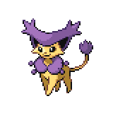
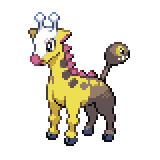
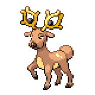
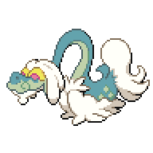
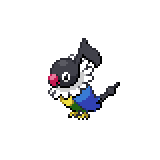

Chrysalis Battlefield - The Third Badge
VS Child of Light Marianette

Once you're ready, head into the golden battlefield. The battle will begin when you approach the stage.
Child of Light Marianette
|

Delcatty, Level 29 - Splash Plate |
Normal | Hyper Voice |
|---|---|---|
| Multipulse (Water) | ||
| Cosmic Power | ||
| Baton Pass | ||
|

Girafarig, Level 27 - Fist Plate |
Normal | Psyshock |
| Multipulse (Fighting) | ||
| Psychic | Facade | |
| Wish | ||
|

Stantler, Level 28 - Icicle Plate |
Normal | Stomping Tantrum |
| Multipulse (Ice) | ||
| Facade | ||
| Work Up | ||
|

Drampa, Level 28 - Roseli Berry |
Normal | Dragonbreath |
| Multipulse (Normal) | ||
| Dragon | Extrasensory | |
| Shadow Ball | ||
|

Chatot, Level 29 - Earth Plate |
Normal | Chatter |
| Multipulse (Ground) | ||
| Flying | Air Cutter | |
| Work Up | ||
|
Bewear, Level 30 - Silk Scarf |
Normal | Brick Break |
| Brutal Swing | ||
| Fighting | Facade | |
| Aerial Ace | ||
Reward:  480 480
|
||
This is one of the first difficult gym battles. The field here doesn't particularly cover her weaknesses, but it allows almost all of her Pokemon to absolutely destroy your team if you're not careful. One of the advantages of this field is that it allows her Normal-type and Fighting-type moves to hit Ghost-type Pokemon for super effective damage. Additionally, a lot of her Pokemon also carry Facade, which makes inflicting status effect very dangerous, and Multipulse, which is a slightly weaker Judgement where the type of the move depends on the plate that is being held. Multipulse is additionally boosted by the Blessed Field. Nearly all of her Pokemon can also set up on you if you take too many turns to set up yourself.
Delcatty is a relatively weak start compared to the rest of her team. As long as you don't let it set up Cosmic Power and Baton pass the defense boost to her more damage-oriented Pokemon you would be fine. Stantler is also not much of a threat as long as it doesn't set up with Work Up. Her Girafarig can be very dangerous, as it carries a field-boosted Psyshock, Fighting-type Multipulse, and its weaknesses of Dark and Ghost are weakened by the field. Her Drampa has Berserk, so once its HP goes below 50% its Special Attack will be boosted, and she can use a Super Potion on it so that Berserk will activate twice. With a Special Attack boost, Drampa can easily sweep your team. It is slow though, so you can outspeed and knock it out before it does too much damage.
Her last two Pokemon are the most threatening. Chatot, especially if it gets a single Work Up, can rip through teams with Chatter and hit any Rock-type, Steel-type, and Electric-type pokemon with Ground-type Multipulse. You can take advantage of the fact that it doesn't have Facade and status it, with Paralysis being probably the best status to inflict on it with so that you can outspeed and hit it before it confuses you with Chatter. It is frail, so as long as you have a chance to damage it you can knock it out.
Her Bewear comes equipped with four damaging moves, an extremely high Attack and HP stat, and a penchant for murder. Bewear's threat comes from the fact that it will almost always be her last Pokemon, coming out against your already weakened team. Thanks to Facade, inflicting any status effect is a double-edged sword, and it has good coverage between Brick Break and Brutal Swing. Something to consider is the fact that Psychic-type moves are boosted in this field, so a strong Psychic-type can be helpful as long as it can take a Brutal Swing. Chimecho, Girafarig, Mr. Mime, or Musharna are all good options for damaging the Bewear.
Another possible avenue of attack is by changing the field. There are a list of moves that can change the field to a Haunted Field, which would weaken Multipulse while making Ghost-types strong against Normal-types and empowering Dark-types as a bonus. Unfortunately, there aren't too many Ghost-type Pokemon available yet, but it is possible to go with this route. As long as you have a plan to take out Chatot and Bewear, the rest of her Pokemon are pretty easy to take out.